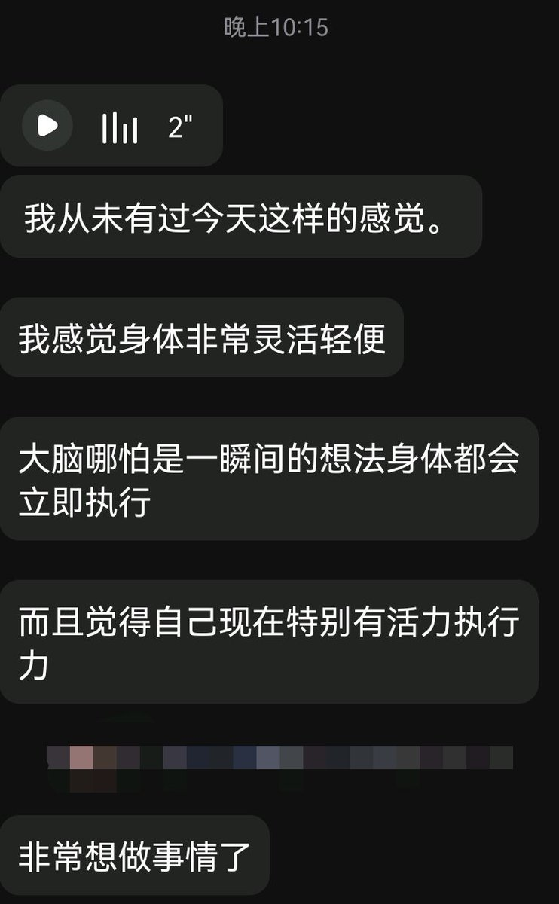
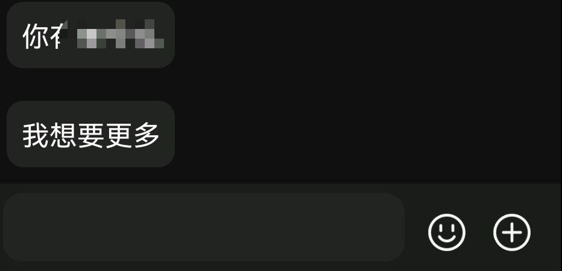

Cbscfe🍥
@Cbscfe
@lyjjlch 这是，超说明书用药。


某人
@lyjjlch
我小女友跟我说过段时间有个考试很重要，然后让我给她整一套能增强能力的药
嗯，反馈非常好👍据她说她很精神，充满了信心和动力，是非常愉悦的感受
只不过她怎么好像依赖了一样，一个劲的问我要更多......
所以说她现在算ODer
我们的女儿是半个ODer
你问我？我说我是半个药师，那个叫测试不叫O（） https://t.co/TqVPXuxlb3